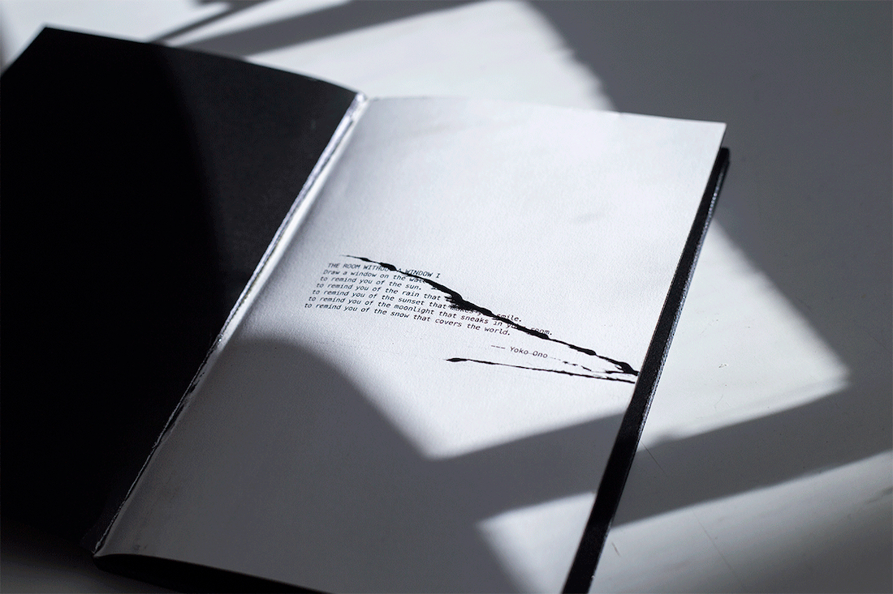
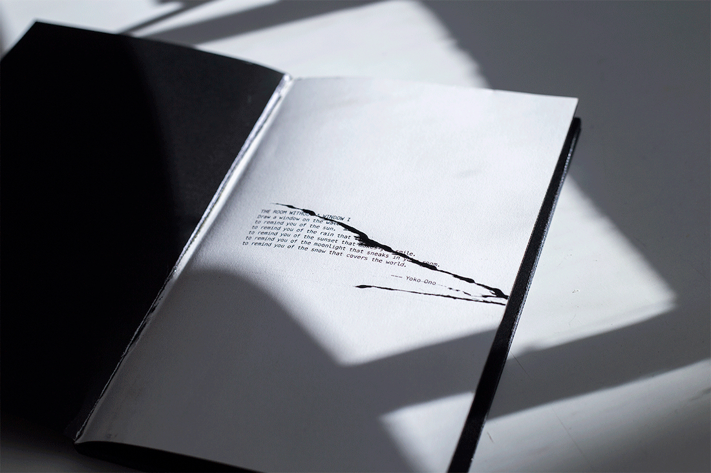

A Book Is A Window
Book Design, December 2021.
Laser Print, 31 pages, 5.5 × 8.5 in.
THE ROOM WITHOUT A WINDOW
I Draw a window on the wall
to remind you of the sun.
to remind you of the rain that taps.
to remind you of the sunset that makes you smile.
to remind you of the moonlight that sneaks in your room.
to remind you of the snow that covers the world.
--- Yoko Ono
 
